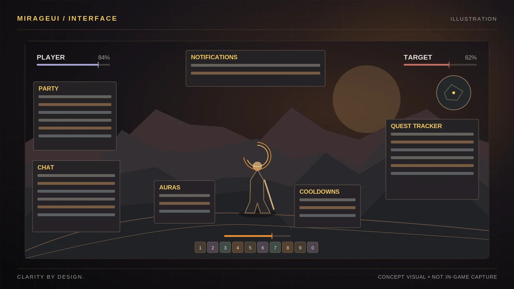

01 / 06 · MirageUI
Your world. In focus.
A cohesive gameplay interface that places essential information within reach.
Unit frames · Nameplates · Gameplay HUD
A thoughtfully crafted interface suite. Less distraction, more room for your adventure.
Windows installer · Forever only · GitHub downloads
01 / EXPERIENCE
Explore six original visual studies of MirageUI’s design and feature areas. These are illustrations, not gameplay captures or promises of specific release behavior.

Use the arrows, feature tabs, or left/right keys. Select the enlarge icon for a closer look.
02 / THE SUITE
Distinct tools, a shared visual language. Each component has a purpose, without overwhelming the experience.
A cohesive gameplay interface that places essential information within reach.
A visual companion for the cursor, with configurable rings, contextual cues and alerts.
A dedicated preparation and rest experience for the space between adventures.
A focused workspace for auction and market information, designed to make economic decisions easier to understand.
A collection of connected map, navigation, gathering and information utilities. Coverage and availability vary by release.
Configure the interface around your preferences, with control over its presentation and available features.
Modules are included in the published v1.0.13-rc.1 test package. Feature availability and behavior depend on the installed release.
03 / DESIGN PHILOSOPHY
A pared-down interface should support the player, not compete with the adventure. Move the slider to compare two illustrative layout studies.


Dense layoutFocused layoutConcept comparison only. Neither image is a capture of the Blizzard interface or an installed MirageUI build.
THE MIRAGEUI MARK
Gold and ember accents, charcoal surfaces and a subtle sense of motion. Play the short original brand animation.
04 / GET STARTED
Install the Windows application through Microsoft Store, or use the portable installer from GitHub. The installer and the Suite are separate distributions.
Install MirageUI Installer from Microsoft Store, or download MirageUIInstaller.exe from GitHub Releases.
Fully close World of Warcraft. Launch the installer and confirm your Forever installation location.
Check for releases, select an available build and install. To test a pre-release, enable Include test versions where available. Back up your settings first.
Browse releases ↗
Illustrated workflow · not a screenshot of the installer
Get MirageUI Installer ↗Portable installer & Suite ZIPs ↗05 / RELEASES
Standard releases are for regular use. Pre-releases are optional testing candidates and may contain bugs. Always review the release notes.
At the packaged release snapshot, the public repository contained only a test release.
Browse all releases ↗P18 test release · published November 22, 2026. Native verification was not run per the release notes.
Read test release notes ↗Packaged snapshot · verified November 23, 2026. For current availability, consult GitHub Releases.
Forever only; not Retail or Classic. The installer is designed to back up existing MirageUI addon folders, leave unrelated addons and SavedVariables untouched, and use release archives. Check the release notes and available SHA-256 checksums.
06 / SUPPORT
Get help with installation, report unexpected behavior, and share ideas through the public issue tracker.
MirageUI is designed for World of Warcraft: Forever. Consult the notes for each Suite release for its specific client build and interface compatibility.
The Store distributes MirageUI Installer. The application installs and updates the Suite using the public GitHub releases. The portable installer and Suite ZIPs are also available on GitHub.
Include your installer and Suite versions, game client build, the steps to reproduce the problem, and relevant errors. Remove personal or sensitive information from screenshots and logs.
ms-windows-store://pdp/?productid=9P9K6ZRQHZJRMIRAGEUI SUITE
Built for focus. Designed for your adventure.